Robots need their own wind tunnel
In 1901 the Wright brothers came home from Kitty Hawk beaten. Their glider lifted far less than their sums predicted. Wilbur said men would fly one day, but not in their lifetime.1
The fault was not in their sums. It was in a number everyone used: Smeaton’s coefficient, 0.005. John Smeaton had worked it out in the 1700s to design windmills.2 It had sat in the books for over a century. Lilienthal used it. So did the Wrights.
So they built a wind tunnel in their bike shop, a wooden box with a fan, and tested some 200 small wings. The real number was about 0.0033, a third smaller.3 Two years later, they flew.
Smeaton’s number was fine for windmills. It was wrong for wings.
Robot learning is in its 1901. Our robots learn in simulators built for something else.
Why simulation matters#
A simulator is a promise: what happens in the box is what would happen outside it.
In 1946 Stanislaw Ulam, recovering from an illness, wanted the odds of winning a game of solitaire. The maths was hopeless, so he imagined playing hundreds of games and counting. That became the Monte Carlo method.4 In 1929 Ed Link built a cockpit tilted by organ bellows. In the Second World War it taught more than half a million airmen to fly on instruments without leaving the ground.5
That is the deal: be wrong for free, many times, before you are wrong for real. Robots take it more than anyone. A simulator runs thousands of copies of a task while a real arm does it once.
The deal only holds if the box tells the truth. A robot trained in a simulator that lies learns a world that does not exist.
What simulators were built for#
- Games, 2000s. Havok, PhysX, Bullet.6 The job: look right, 60 times a second. A crate a centimetre off is fine if nobody can tell. Getting the same answer twice was hard enough that game developers wrote guides on it.7
- Controllers, 2012. MuJoCo was built “for model-based control”:8 fast, smooth maths for planners that ask “what if?” millions of times.
- Walking, 2021. Isaac Gym put thousands of robots on one GPU. A four-legged robot learned to walk in under four minutes.9 Feet on a floor are forgiving.
- GPU robot learning, 2025. Newton, from Disney Research, Google DeepMind and NVIDIA,10 and MuJoCo Warp. The best open tools we have. We use them every day.

None was built for hands: a plate into a rack, a plug with 0.2 mm to spare, a cable under 2 mm thick, a cloth. None promised the same answer every time.
That is our Smeaton coefficient. Not a bad number. A number made for something else.
What we measured#
We ran the stock engines through 30 test scenes on one GPU and checked each against physics. Three problems stood out.
Same question, different answers. A GPU simulator runs thousands of copies of one world, and the copies stop being copies. A stack of ten cubes stands on its own. Copied 4,096 times, 98 % of the copies fall.

Exact counts: 0 of 16, 92 of 256, 882 of 1,024, 4,031 of 4,096.
A GPU adds thousands of numbers at once, in whatever order its threads finish, and in computer arithmetic order changes the last digit. Only 42 % of GPU setups gave the same result twice. We graded one robot three times, 200 tries each, changing only how its inputs were rounded: it placed the plate 50 % of the time, then 63 %. A ruler that moves 13 points by itself can’t tell you whether a change helped.
Close is not right. Only one stock setup in five passed its physics test. A nut and bolt needed 12–16 % too much twist. A network-cable latch was 9–18 % off.
Fast where it doesn’t matter. A falling body runs at 100 million steps a second. A bin of 64 objects slows every engine to a crawl, and a pile of 256 ran slower on the GPU than on a CPU.
What we fixed#
In three weeks we reported 20 bugs to Newton, MuJoCo Warp and MuJoCo, with 11 fixes. A few:
| What broke | Engine | Status |
|---|---|---|
| Round shapes touched 0.1 mm early | Newton | Fixed |
| A resting block was fired through its board | MuJoCo Warp | Fix open |
| Stiff cables sagged 40 % too far | Newton | Fix sent |
| Fine cloth lost its bending, without a warning | Newton | Fix sent |
| A cloth pile sank through the floor | Newton | Reported |
| Pushed cloth gained 3.2 times its momentum | Newton | Reported |
| A held cloth dropped to the floor | Newton | Fixed |
| Every world shared one bounding box, and a ball fell through its table | MuJoCo Warp | Fix open |
The physics bugs, animated: What the fuck is the sim-to-real gap?
Why upstream fixes aren’t enough#
Newton has merged three of our fixes, two of them within two days. MuJoCo Warp hasn’t merged one in three weeks. That is fair. These engines serve thousands of users, mostly teaching robots to walk, and their maintainers must be careful.
But this is not 20 bugs. It is one pattern: engines tuned for scenes where a millimetre doesn’t matter, nobody reruns a world, and speed is measured on falling boxes. Fixing that one patch at a time is like correcting Smeaton’s coefficient one wing at a time.
So we’re building our own wind tunnel#
The Wrights didn’t stop trusting physics. They stopped trusting a number nobody had checked for their problem, and built the instrument to check it.
We are building a physics engine for robot hands. We call it Alloy: a blend of the best solvers we have taken apart, built on the open work above. Five promises:
- Same question, same answer. Bit for bit, for about a quarter more compute, not forty times more.
- Right below a millimetre. Plugs, threads, plates, latches.
- Thin, soft and tangled things first. Cables, cloth, liquids.
- Never wrong in silence. Every copy checks itself, every step.
- Fast where hands work. Bins, piles and grasps, not falling boxes.
Alloy launches soon.
References#
-
U.S. Centennial of Flight Commission. “The Wright Brothers: The 1901 Glider and the Wind Tunnel.” centennialofflight.net. ↩
-
The Wright Brothers Aeroplane Company. “Kitty Hawk in a Box.” wright-brothers.org. ↩
-
NASA Glenn Research Center. “Lift Equation of the 1900s.” grc.nasa.gov. The modern value is 0.00326. ↩
-
Roger Eckhardt. “Stan Ulam, John von Neumann, and the Monte Carlo Method.” Los Alamos Science 15, 1987, pp. 131–141. PDF. ↩
-
“Link Trainer.” Wikipedia; ASME. “Landmark #210: Link C-3 Flight Trainer.” asme.org. ↩
-
Glenn Fiedler. “Floating Point Determinism.” gafferongames.com. ↩
-
Emanuel Todorov, Tom Erez, Yuval Tassa. “MuJoCo: A physics engine for model-based control.” IROS 2012. doi:10.1109/IROS.2012.6386109. ↩
-
Nikita Rudin, David Hoeller, Philipp Reist, Marco Hutter. “Learning to Walk in Minutes Using Massively Parallel Deep Reinforcement Learning.” CoRL 2021. arXiv:2109.11978. ↩
-
The Linux Foundation. “Linux Foundation Announces Contribution of Newton by Disney Research, Google DeepMind and NVIDIA to Accelerate Open Robot Learning.” 29 September 2025. linuxfoundation.org. ↩
Citation#
Please cite this work as:
@article{gupta2026windtunnel,
author = {Pranay Gupta},
title = {{Robots need their own wind tunnel}},
journal = {codnay.github.io},
year = {2026},
month = {November},
url = {https://codnay.github.io/blog/robots-need-their-own-wind-tunnel/},
}